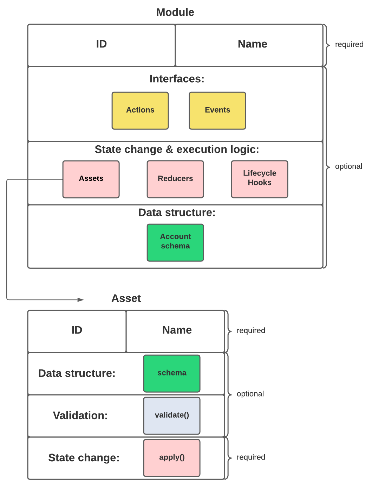

Modules
Modules hold all logic that is changing the state of the blockchain; or in other words, all logic that makes changes on the chain.
Modules can be registered to a blockchain application to extend the on-chain logic.
| All of the logic implemented using a custom module / asset must be “deterministic” and executable within the block time. |
|
When to create a custom module
Modules enable to…
|
|
For a more practical guide, how to create a new module, check out the guide Creating a new module. If you wish to view an example of a fully implemented module, check out the following examples:
|
Module anatomy
All important parts of a module are shown in the below diagram and explained in more detail below.

The module class
Each module is constructed as a class which extends from the BaseModule.
The base module provides an interface which needs to be completed by implementing the below described components of a module. It also provides the following 3 properties which are accessible throughout the module:
dataAccess
Use the property this._dataAccess to access data from the blockchain in the module.
| Updating and changing of data on the blockchain is only allowed inside of Assets and Lifecycle Hooks via The state store |
Interfaces
Modules can expose interfaces, which allow other components of the application to interact with the module. Reducers are actions that can only be invoked by other modules of the application. Actions and Events are exposed to the plugins and to external services. More information about the exposed interface can be found in the section about the Communication.
State changes & execution logic
Assets
Transaction assets contain all logic related to transactions that belong to the module.
|
When to create a new asset
Create a neew asset for every new transaction type that you want to use in the blockchain application. Assets enable to…
|
Lifecycle Hooks
Account schema
Modules define an account schema to store the module related data in the account. The definition of this schema is totally flexible and it is possible to define very complex data structures as well, if needed.
How to add a module to the application
Modules are registered in the file src/app/modules.ts.
|
Registering a new module requires the generation of a new genesis block and therefore always results in a hardfork of the blockchain of the application. Check out the Generating a genesis block guide for more information on how to generate a new genesis block for your application. |
modules.tsimport { Application } from 'lisk-sdk';
import { SomeModule } from "some-module"; (1)
export const registerModules = (app: Application): void => {
app.registerModule(SomeModule); (2)
};| 1 | Import the module from an NPM package or from a local path. |
| 2 | Add this line to register the module with the application. |